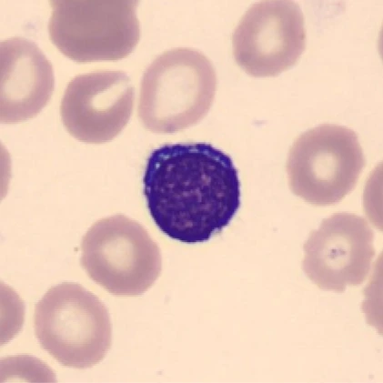
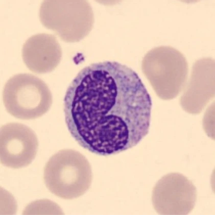
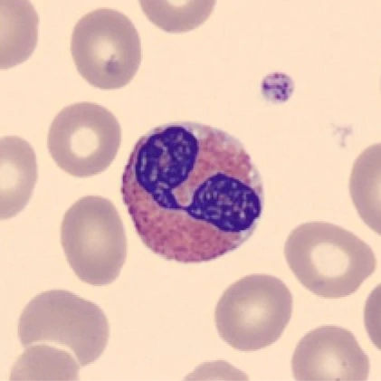

01 / GRANULOCYTE

Neutrophils
Rapid microbial defense
Maturation + function →Five cell types. Different jobs. One coordinated response.
Select a real blood-film photograph to explore how that cell matures and what it does.
Rapid microbial defense
Maturation + function →
Targeted defense & surveillance
Maturation + function →
Engulf, clean & coordinate
Maturation + function →
Parasites & allergic inflammation
Maturation + function →
Histamine & allergy signaling
Maturation + function →White blood cells arise from blood-forming stem cells. Developing cells specialize along different routes. Most precursor stages belong in the marrow; T-cell maturation includes the thymus.